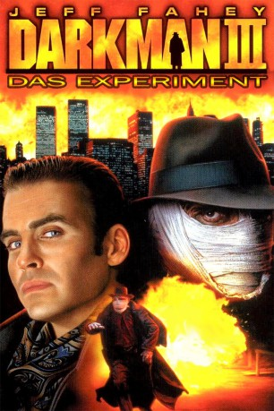

#10082 Darkman III - Das Experiment
 
 IMDB-Wertung: 4.8 / 10
IMDB-Wertung: 4.8 / 10  Metascore: 0
Metascore: 0 
Dr. Peyton Westlake alias Darkman ist zurück! Im dritten Teil der actiongeladenen Darkman-Saga trifft Westlake auf einen ebenbürtigen Gegner den skrupellosen Unterweltboss und Drogendealer Peter Rooker. Dieser will unbedingt hinter das Geheimnis von Darkmans übermenschlichen Kräften kommen und lockt ihn mit dem Versprechen der Wiederherstellung seines entstellten Körper und der Hilfe einer schönen Ärztin in eine hinterhältige Falle. Zu spät merkt Westlake, daß es Rooke gelungen ist, ihm eine Gewebeprobe zu entnehmen. Er will daraus eine Droge entwickeln, die seine Killer zu unbezwingbaren Kampfmaschinen macht... Um Rookers Plan zu vereiteln, muß Westlake tief in die Trickkiste greifen bei diesem Spiel um sein Leben, seine Forschungsergebnisse und das Leben zweier unschuldiger Menschen.
Jahr: 1996
Dauer: 87 Minuten
FSK: 18
Land: USA Studio: MCA/Universal Home VideoTonspuren:
Untertitel: Deutsch,
Auflösung: 720p (1280x720) Größe: 4106 MB
Genre: Action, Thriller, Horror, Sci-Fi, Krimi
Regisseur: Bradford May
Drehbuch: Michael Colleary, Mike Werb
Soundtrack: Randy Miller
Darsteller:
 Jeff Fahey als Peter Rooker
Jeff Fahey als Peter Rooker Arnold Vosloo als Darkman / Dr. Peyton Westlake
Arnold Vosloo als Darkman / Dr. Peyton Westlake- Darlanne Fluegel als Dr. Bridget Thorne
- Roxann Dawson als Angela Rooker
 Nigel Bennett als Nico
Nigel Bennett als Nico Shawn Doyle als Adam
Shawn Doyle als Adam- Vieslav Krystyan als Ivan
 Joel Bissonnette als Mayo
Joel Bissonnette als Mayo John Novak als Dist. Atty. Ryan Mitchell
John Novak als Dist. Atty. Ryan Mitchell- Diana Platts als Diane Platts
 Brian Paul als Angry guest
Brian Paul als Angry guest- Michelle Collins als Nurse
- Suanne Hastings als Birthday Singer (uncredited)
- Alicia Panetta als Jenny Rooker
- Ronn Sarosiak als Mack
- Peter Graham als Joey
- Chris Adams als Whit
- Rick Parker als E.K.
- Christopher Bondy als Gibson
- Von Flores als Johnny Lee
- Eric Hollo als Paul Raney
- Gino Giacomini als Beast in school play
- Lance Paton als Narrator
- Suzanne Primeau als Mother
- Bob Windsor als Uncle Owen
- Rene Beau Dean Huard als Mitchell supporter
- Lorne Cossette als Dr. Leonard
- Joanne Reece als Reporter #2
- Walker Boone als Sgt. Troy
- Denise Baillargeon als Female guest
Datei: X:\FSK18-Collections\Darkman\Darkman III - Das Experiment (1996, FSK18, 1280x720).mkv seit 28.11.2018
Festplatte: FSK18
 Alle Filme aus Gruppe 'FSK18-Collections\Darkman'
Alle Filme aus Gruppe 'FSK18-Collections\Darkman'